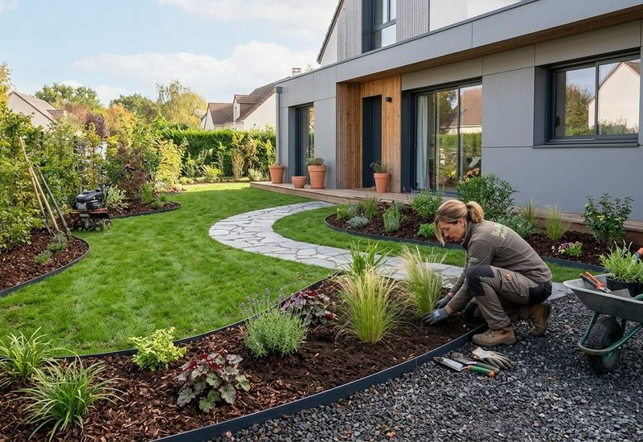

Dirigeante
Coralie Michel dirige l’entreprise.
Coralie Michel Paysage est une entreprise de services d’aménagement paysager basée à Bullion, dans les Yvelines. Elle est dirigée par Coralie Michel.
Coralie Michel, dirigeante
Coralie Michel dirige l’entreprise.
Services d’aménagement paysager : création, plantation et entretien d’espaces verts.
Bullion, dans les Yvelines (78).

Appelez le 06 70 79 02 30 ou utilisez le formulaire de demande de devis : décrivez votre besoin en quelques lignes.
© Coralie Michel Paysage · Bullion (78) · 06 70 79 02 30 · Maquette de démonstration